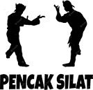
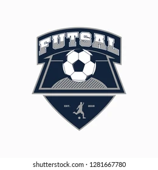

<!DOCTYPE html>
<html>
    <head>
        <link rel="stylesheet" href="csss6.css">
        <title>USER</title>
    </head>
    <body>
    </body>
         <div class="banner">
            <div class="navbar">
            <label class=" logo"></label>
             <ul>
                <li><a href="#"><a href="user.html">Home</a></li>
                <li><a href="#"><a href="usertable.html">Penilaian</a></li>
                <li><a href="#"><a href="userkontak.php">Informasi</a></li>
                <li><a href="#"><a href="login.php">Log out</a></li>
             </ul>
            </div>
            <div class="content">
                <h1>SILAHKAN PILIH </br>TABEL YANG SESUAI</h1>
                <div>
            <div>
                   <button type="button"><a href="1silat.php"></a></button>
                   <button type="button"><a href="1basket.php"></a></button>
                   <button type="button"><a href="1dkv.php"></a></button>
                   <button type="button"><a href="1futsal.php"></a></button>
                </div>
                    <style>
                        a:any-link{
                            color:whitesmoke;
                            background-color: none;
                            text-decoration: none;
                        }
                    </style>
                </div>
            </div>
         </div>
    </html>

    <!DOCTYPE html>
    <html lang="en">
    <head>
      <title>Footer Design</title>
      <meta charset="utf-8">
      <meta name="viewport" content="width=device-width, initial-scale=1">
      <link rel="stylesheet" href="footer2.css">
      <link rel="stylesheet" type="text/css" href="https://cdnjs.cloudflare.com/ajax/libs/font-awesome/5.15.1/css/all.min.css">
    </head>
    <body>
    
      <footer class="footer">
           <div class="container">
               <div class="row">
                   <div class="footer-col">
                       <h4>meaning</h4>
                       <ul>
                        <li><a>&copy; 2023 Aiman wafi'i an nawal. Web ekstrakurikuler ini dibuat untuk pekerjaan sekolah yang berguna sebagai nilai untuk kenaikan kelas dan kenaikan level dari siswa</a></li>
                    </ul>
                   </div>
                   <div class="footer-col">
                       <h4>Contact us</h4>
                       <ul>
                           <li><a>+62 851-7303-4717</a></li>
                           <li><a>+62 819-0767-4517</a></li>
                           <li><a>aone111181@gmail.com</a></li>
                           <li><a>sidoarjo,sukodono suruh rt 5 rw 1</a></li>
                       </ul>
                   </div>
                   <div class="footer-col">
                       <h4>follow us</h4>
                       <div class="social-links">
                           <a href="#"><i class="fab fa-facebook-f"></i></a>
                           <a href="#"><i class="fab fa-twitter"></i></a>
                           <a href="https://instagram.com/sy.wafii03_?igshid=MzNlNGNkZWQ4Mg=="><i class="fab fa-instagram"></i></a>
                           <a href="#"><i class="fab fa-linkedin-in"></i></a>
                       </div>
                   </div>
               </div>
           </div>
      </footer>
    
    </body>
    </html>
    